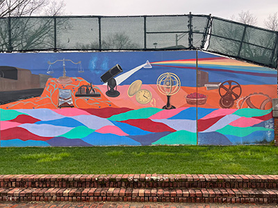
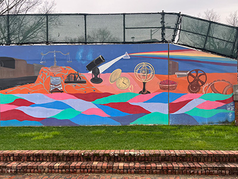

The Search for Art in New Brunswick
The world is teeming with art at every waking moment, but the question is: are you looking hard enough to find it?
Join us as we discover art (the good, the bad, and the unconventional) all throughout our city!
Social Justice
This section is dedicated to art with a deeper purpose in addition to its beauty. Coincidentally (or not), these are all murals, perhaps because the message is easier to spread when displayed to a wider audience.


 

Did you catch that?
As we scuttle across campus with our heads held down, we tend to miss the art that is right in front of us. Next time you're walking to class, keep an eye out. Maybe you'll find unexpected treasure!
A World Turned Inside Out

Class of 1957 Stained Glass Window

Honors College Mural